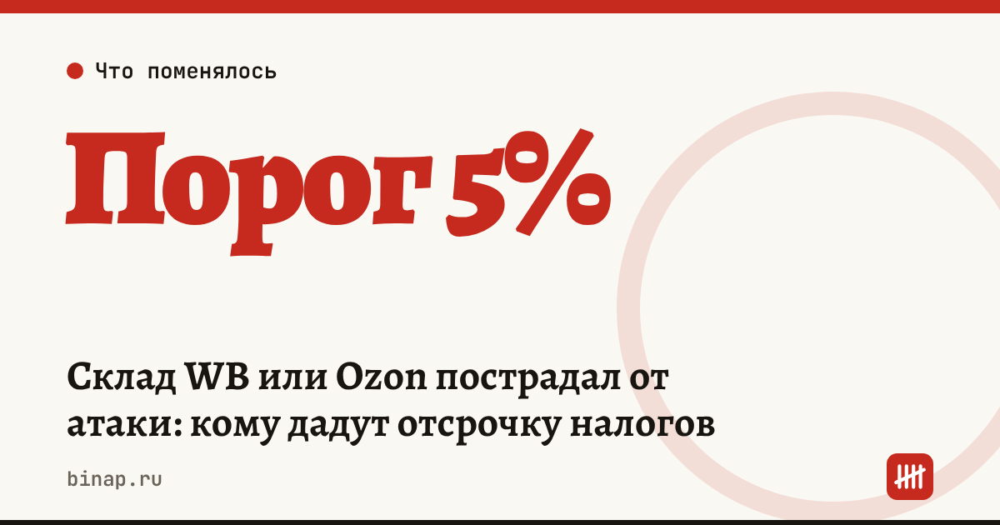

Склад WB или Ozon пострадал от атаки: кому дадут отсрочку налогов

Если ваш товар сгорел или пропал на складе Wildberries или Ozon после атаки, вы можете получить перенос сроков уплаты налогов и взносов на 12 месяцев. Условие — ущерб больше 5% годового дохода. Теперь в расчёт берут атаки не только беспилотников, но и РСЗО и ракет, а ущерб на двух площадках складывают.
Коротко
- Меры для продавцов Wildberries — постановление правительства от 25.08.2026 № 1074, для продавцов Ozon — от 30.09.2026 № 1277. 12 ноября Минфин сообщил, что их привели к одному виду.
- Поддержка — для пострадавших от атак беспилотников, РСЗО и ракет.
- Порог — ущерб больше 5% годового дохода. Для тех, кто зарегистрирован с 1 декабря 2025 года, с выручкой не сравнивают.
- Если вы торгуете и на WB, и на Ozon, учитывается совокупный ущерб.
- Площадки передают списки пострадавших в ФНС и территориальные органы СФР не позднее 5-го числа каждого месяца (раньше — до 10-го).
Сроки, изменения и разборы для ИП и самозанятых — каждое утро в Telegram и MAX. Подпишитесь, чтобы не пропустить.
Что это значит
Раньше правила для продавцов двух площадок отличались. Теперь они одинаковые:
- Причина ущерба. Не важно, чем атаковали склад: беспилотником, РСЗО или ракетой.
- Две площадки — одна сумма. Потери на WB и на Ozon складываются и сравниваются с 5% вашего годового дохода.
- Что дают. По данным «Ведомостей», продавцам Ozon 2 октября 2026 года продлили сроки уплаты ряда налогов и страховых взносов на 12 месяцев; такие же меры раньше ввели для Wildberries и её продавцов.
- Кто подаёт данные. Списки пострадавших в налоговую и Соцфонд передаёт площадка, теперь — до 5-го числа месяца. Значит, сначала нужно попасть в список площадки.
Точный перечень налогов и взносов с отсрочкой сверяйте по текстам постановлений: мы их не открывали, сайт Минфина был недоступен.
Пример: проходите ли вы по порогу
Расчёт редакции. ИП на УСН, доход за год — 12 млн ₽. Порог: 12 000 000 × 5% = 600 000 ₽.
| Площадка | Ущерб |
|---|---|
| Wildberries | 400 000 ₽ |
| Ozon | 300 000 ₽ |
| Итого | 700 000 ₽ |
По отдельности ни одна сумма не дотягивает до 600 000 ₽. Вместе — 700 000 ₽, это больше порога. Раньше такой продавец мог остаться без поддержки, теперь он в неё попадает.
Если ИП зарегистрирован, например, в январе 2026 года, с выручкой ущерб не сравнивают.
Что сделать сейчас
- Соберите ущерб по обеим площадкам. Выгрузите из кабинетов WB и Ozon списки утраченного товара и суммы компенсаций, которые площадка уже признала.
- Посчитайте 5% от годового дохода. Возьмите доход из учёта (КУДиР или бухгалтерии) и сравните с суммой ущерба.
- Уточните у площадки, есть ли вы в списке. Площадка передаёт данные в ФНС до 5-го числа месяца. Если вас нет в списке — напишите в поддержку сейчас, чтобы попасть в ближайшую передачу.
- Следите за ЕНС. Проверьте в личном кабинете налогоплательщика, перенесены ли сроки, прежде чем пропускать платёж. Пока отсрочка не видна, налоги лучше платить в обычный срок, иначе начнут пени.
- Заложите платежи через 12 месяцев. Отсрочка не отменяет налог, а переносит его. Как увидеть будущий разрыв заранее — в статье Клиенты платят позже: как заранее увидеть кассовый разрыв.
Если после потери товара не хватает денег на новую закупку, сравните полную стоимость кредитов под выручку маркетплейса — методика в статье Кредит под выручку маркетплейса: как посчитать полную стоимость. Если площадка задерживает выплаты, план действий — в материале Wildberries задержал выплату: что собрать и как посчитать проценты. Весь путь продавца по шагам — в разделе Селлерам.
Частые вопросы
Нужно ли доказывать, что склад атаковал именно беспилотник? Нет. После уточнения поддержка положена и пострадавшим от РСЗО и ракет.
Я торгую на двух площадках, на каждой ущерб небольшой. Я подхожу? Да, если сумма ущерба на обеих площадках больше 5% вашего годового дохода.
Налог совсем не нужно будет платить? Нужно. Это перенос сроков на 12 месяцев, а не списание.